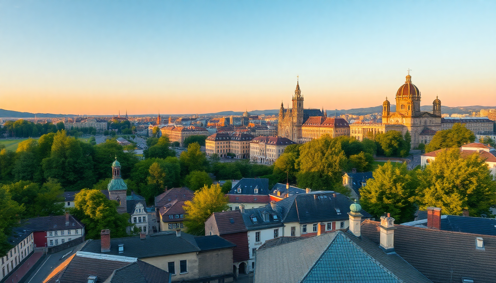

Where to Stay in Munich: Best Neighborhoods for Every Budget

I’ve spent a fair chunk of time walking Munich’s streets, from the tourist-packed squares to the quiet beer-garden corners where locals actually hang out. Figuring out where to stay here can make or break your trip—get it right, and you’re steps from a good coffee, a decent U-Bahn stop, and a bed that doesn’t wreck your back. Get it wrong, and you’re commuting forty minutes to see anything worth seeing. Here’s what I learned after bouncing between five different neighborhoods over two visits.
Where should you stay in Munich on a tight budget?
If you’re watching your euros, skip the Altstadt and head south to Sendling or west to Neuhausen. These are real Munich neighborhoods—no souvenir shops, just bakeries, Turkish grocers, and the kind of beer halls where old men read newspapers. I stayed at Wombat’s City Hostel in Sendling one trip (clean, loud on weekends, but cheap) and found the U-Bahn at Implerstraße got me to Marienplatz in under ten minutes. For a step up, Hotel Blauer Bock near the main train station is basic but solid, and you’re walking distance to the Augustiner brewery.
- Sendling: Budget hostels like Wombat’s, plus great Turkish kebab spots on Lindwurmstraße.
- Neuhausen: Quieter, family-run pensions near Rotkreuzplatz; try Gästehaus Neuhausen for under €80 a night.
- Hauptbahnhof area: Convenient but grimy at night—Motel One München Hauptbahnhof is reliable if you need a quick stop.
What’s the best neighborhood for first-time visitors?
For your first trip, you want to be in the thick of it without paying Altstadt hotel prices. Altstadt-Lehel is the obvious choice, but I think Glockenbachviertel or Lehel itself gives you more breathing room. Lehel is a five-minute walk from the Englischer Garten and a ten-minute walk to Marienplatz. I booked a room at Hotel Concorde on Herrnstraße—small, quiet, and the staff pointed me to a hidden beer garden behind the Haus der Kunst that tourists never find.
- Lehel: Quiet streets, close to the river Isar and the Englischer Garten; Hotel Admiral is a mid-range gem.
- Glockenbachviertel: Trendy bars and cafés, less crowded than Altstadt; Ruby Lilly Hotel has a rooftop bar with views.
- Altstadt: Only worth it if you want to roll out of bed to the Frauenkirche; Hotel Bayerischer Hof is iconic but pricey.
Where do locals actually live and hang out?
Munich locals avoid the tourist core like the plague. They’re in Schwabing, Maxvorstadt, or Haidhausen. Schwabing is the classic bohemian quarter—university students, indie bookshops, and the Englischer Garten right there. I grabbed a room at Hotel Munchen Palace on one trip (fancy but worth it for the pool) and spent evenings at Alter Simpl, a beer hall that’s been around since 1904. Maxvorstadt is where the museums are—Pinakotheken and Brandhorst Museum—and it feels younger, with more vegan cafés than pretzels.
- Schwabing: Lively nightlife, leafy streets; Hotel Schwabing is affordable and near the U-Bahn.
- Maxvorstadt: Art district, great for museum lovers; The Lovelace is a boutique spot with a killer breakfast.
- Haidhausen: French Quarter vibe, with the Gasteig cultural center and the Nockherberg beer hall.
Which neighborhood is best for nightlife and partying?
If you came for Oktoberfest or just want to drink good beer until 2 a.m., Schwabing is your zone, but so is Glockenbachviertel for a younger, less touristy scene. I hit Kultfabrik in the old east rail yards one night—it’s a complex of clubs in Berg am Laim, a bit out of the center, but the U-Bahn runs late. For something more laid-back, Augustiner-Keller in Maxvorstadt is a massive beer garden where you can nurse a Maß under chestnut trees without the rowdy crowds.
- Schwabing: Bars on Leopoldstraße, clubs like Pacha; stay at Hotel Dolomit for proximity.
- Glockenbachviertel: LGBTQ-friendly bars and cocktail spots; Hotel Wallis is budget and central.
- Berg am Laim: Club district with Kultfabrik; Motel One München Ost is a logical base.
What’s the most family-friendly area to stay?
Families should look at Bogenhausen or Haidhausen. Bogenhausen is upscale, quiet, and has the Englischer Garten on its doorstep—kids can run wild in the meadows while you grab a coffee at Seehaus by the lake. I stayed at Hotel Prinzregent in Bogenhausen with a friend’s family; it had a small kitchenette and was a five-minute walk to the Prinzregentenplatz U-Bahn. Haidhausen has the Ostpark and the Deutsches Museum nearby, plus restaurants that don’t mind kids.
- Bogenhausen: Leafy, spacious apartments; Hotel Park Consul has family rooms.
- Haidhausen: Parks and museums; Holiday Inn Munich City Centre is practical and close to the S-Bahn.
- Obermenzing: Farther out but near the Schloss Nymphenburg gardens; Hotel Gasthof Obermenzing is a steal.
Where should you stay for luxury or a splurge?
For one big trip, I treated myself to Hotel Vier Jahreszeiten Kempinski on Maximilianstraße. It’s old-school luxury—marble bathrooms, a doorman who remembers your name, and a location that puts you steps from the Opera House and the best shopping in town. If you want something more modern, The Charles Hotel in Maxvorstadt has a spa and views of the Alte Pinakothek. Both are north of €300 a night, but you’re paying for the location and service.
- Altstadt: Hotel Bayerischer Hof is the classic choice; rooftop bar with city views.
- Maxvorstadt: The Charles Hotel is sleek and quiet; pool and sauna included.
- Lehel: Hotel Mandarin Oriental is small and exclusive; Michelin-starred restaurant inside.
What about staying near the main train station?
The Hauptbahnhof area is convenient but not charming. I’ve used it for early trains to Salzburg or Füssen and stayed at Motel One München Hauptbahnhof—it’s clean, cheap, and the soundproofing works. The streets around the station have a lot of fast food and some sketchy characters after dark, but it’s fine for a night or two. If you need to catch a flight, Hotel am Moosfeld near the S-Bahn to the airport is a better bet.
- Hauptbahnhof: Motel One and Hotel Blauer Bock are reliable; avoid side streets late.
- Munich East (Ostbahnhof): Quieter, with good S-Bahn links; MEININGER Hotel Munich East is hostel-style but clean.
- Munich Airport area: Novotel München Airport has a shuttle and is fine for layovers.
FAQ
Is it better to stay in Altstadt or outside the center for a short trip? For a two-day trip, stay in Altstadt or Lehel—you’ll save time commuting. I once stayed in Sendling for a long weekend and regretted the extra twenty minutes each way to Marienplatz. If you have three-plus days, a neighborhood like Schwabing or Haidhausen gives you more local flavor without sacrificing access.
Which neighborhood is safest for solo female travelers? Munich is generally safe, but I’d pick Lehel or Maxvorstadt for solo trips. Both are well-lit, busy until late, and have good U-Bahn connections. Avoid the Hauptbahnhof area after midnight—it’s not dangerous, just uncomfortable. I felt fine walking from Hotel Concorde back to my room at 11 p.m. in Lehel.
How do I get from the airport to my neighborhood? The S-Bahn lines S1 and S8 run from the airport to the city center every ten minutes. S8 is faster and more reliable—I took it to Ostbahnhof and switched to the U-Bahn. A single ticket costs about €13. Taxis are €70-plus; only worth it if you’re splitting with three people.
Conclusion
- For budget travelers, Sendling or Neuhausen offer cheap beds and real local life.
- First-timers should stick to Lehel or Glockenbachviertel for walkable access to the main sights.
- Night owls will love Schwabing and Glockenbachviertel for bars and clubs.
- Families get the most space and green areas in Bogenhausen or Haidhausen.
- Splurge on Altstadt or Maxvorstadt for luxury hotels and prime location.